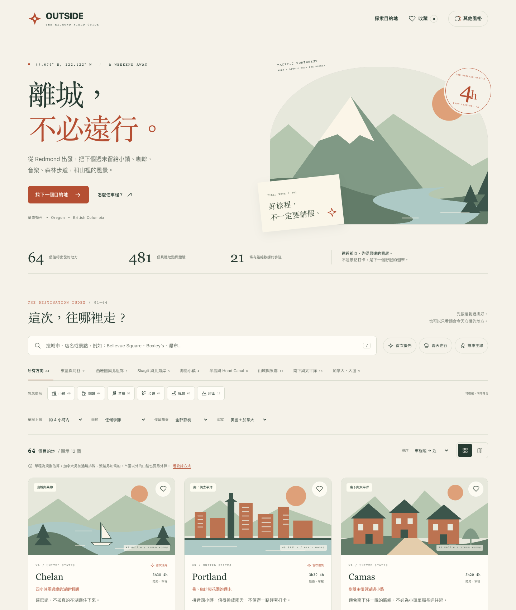
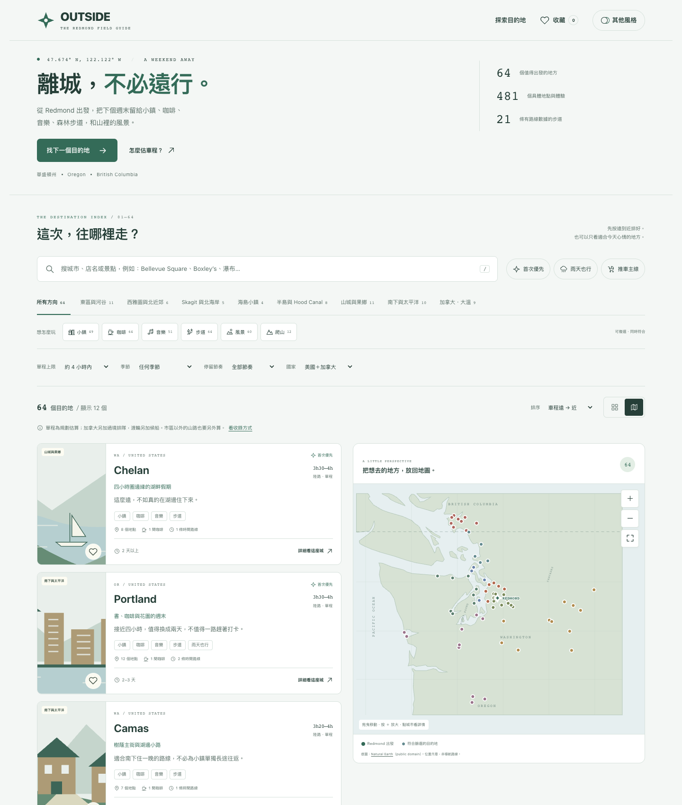
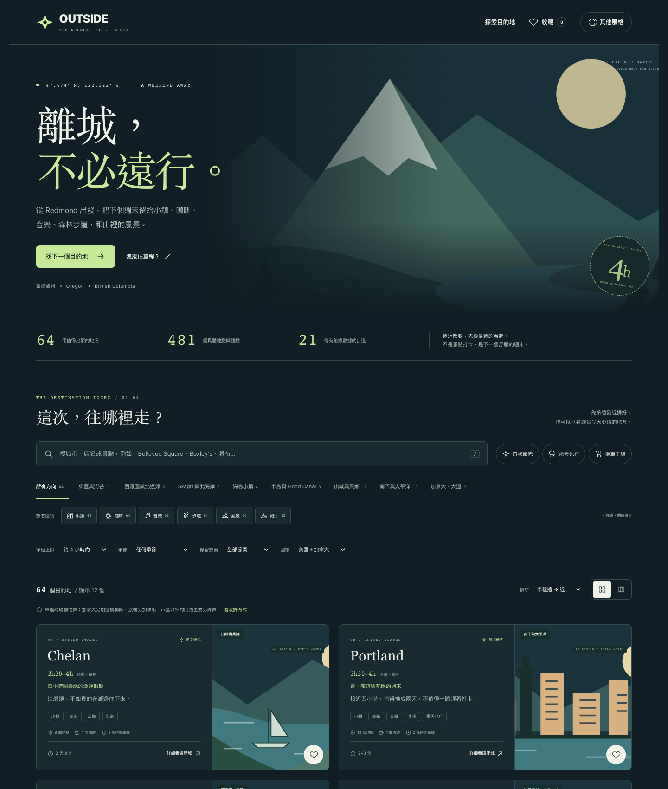

THE SAME WEEKEND. A DIFFERENT POINT OF VIEW.
不是三個換色按鈕。是三種版面、閱讀節奏與氣氛。同一份 64 個目的地的詳細指南，隨時可以切換，不會失去收藏。

奶油紙感、陶土色、襯線標題與故事卡。適合慢慢翻、看到一座就想收藏的你。

更安靜、更俐落，城市清單與地圖並排。適合先看方位、再決定怎麼走的你。

深色大景、高對比與有點探險感的資訊卡。適合晚上坐下來，挑下次出走的你。
選的是閱讀方式，不是不同內容。搜尋、遠近排序、季節／雨天／推車篩選、互動地圖、詳細行程與收藏，三種風格都有。